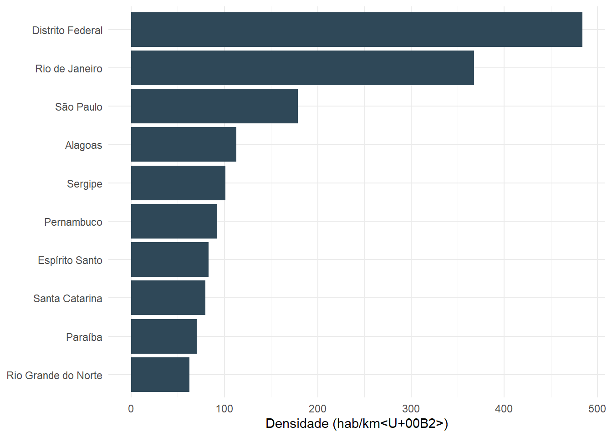

library(dplyr)
library(ggplot2)
populacao_uf <- readr::read_csv(here::here("dados", "populacao_uf.csv"), show_col_types = FALSE)
top10_densidade <- populacao_uf |>
slice_max(densidade_dem, n = 10)Aula 4 — Interatividade, parâmetros e projetos reutilizáveis
Recursos interativos e relatórios parametrizados sem perder organização.
Visão geral
Nesta aula, o relatório deixa de ser uma peça única e passa a ser reutilizável. Veremos quando usar interatividade, como declarar parâmetros e como separar funções e configurações do documento principal — sempre com um artefato real, não só uma descrição do que seria possível fazer.
Objetivos de aprendizagem
- reconhecer quando a interatividade ajuda o público;
- incorporar widgets HTML com responsabilidade;
- declarar e utilizar parâmetros no YAML;
- renderizar variações de um mesmo relatório;
- modularizar código repetido.
1. Interatividade com propósito
Gráficos interativos permitem explorar valores, aplicar zoom e exibir detalhes. Eles são úteis quando o leitor precisa investigar os dados; para uma mensagem única, um gráfico estático costuma ser mais claro. Compare as duas versões abaixo — mesmos dados, mesma pergunta (“quais estados têm mais habitantes por km²?”):
Estática — melhor quando o relatório vai para PDF, impressão ou quando a mensagem é uma comparação única e definitiva:
ggplot(top10_densidade, aes(x = reorder(nome_uf, densidade_dem), y = densidade_dem)) +
geom_col(fill = "#2f4858") +
coord_flip() +
labs(x = NULL, y = "Densidade (hab/km²)") +
theme_minimal()
Interativa — melhor quando o leitor precisa explorar valor por valor, em um HTML:
plotly::plot_ly(
data = top10_densidade,
x = ~densidade_dem,
y = ~reorder(nome_uf, densidade_dem),
type = "bar",
orientation = "h",
hovertemplate = "%{y}: %{x:.1f} hab/km²<extra></extra>"
) |>
plotly::layout(
xaxis = list(title = "Densidade (hab/km²)"),
yaxis = list(title = "")
)Nenhuma das duas está errada — a decisão depende do formato de saída e do que o público vai fazer com o gráfico. Um documento PDF nunca vai mostrar o plotly interativo (ele exige um navegador rodando JavaScript); é por isso que a Aula 3 insiste em escolher o formato pelo público antes de escolher os recursos visuais.
2. Um mapa é interatividade que resolve um problema real
dados/populacao_uf.csv já tem latitude e longitude da capital de cada estado — dá para colocar cada um no mapa, com o tamanho do marcador proporcional à população:
leaflet::leaflet(populacao_uf) |>
leaflet::addProviderTiles(leaflet::providers$CartoDB.Positron) |>
leaflet::addCircleMarkers(
lng = ~longitude,
lat = ~latitude,
radius = ~sqrt(populacao) / 200,
stroke = FALSE,
fillOpacity = 0.7,
color = "#2f4858",
label = ~paste0(nome_uf, ": ", format(populacao, big.mark = "."), " hab.")
)Um mapa estático (uma imagem) também mostraria a localização das capitais, mas só o mapa interativo permite arrastar, dar zoom e ler o rótulo de um estado específico sem poluir a figura inteira com texto. É exatamente o tipo de tarefa (“onde fica” + “qual é o valor exato aqui”) em que a interatividade paga o custo de não funcionar em PDF.
3. Relatórios parametrizados
Parâmetros permitem gerar várias versões do mesmo documento sem duplicar arquivos. Em vez de descrever isso em abstrato, veja o exemplo completo e funcional deste curso:
DicaExemplo real
materiais/exemplos/relatorio-parametrizado.qmd é um .qmd completo que filtra dados/populacao_uf.csv por região usando um parâmetro. Abra o arquivo-fonte no repositório enquanto lê esta seção.
O YAML declara o parâmetro e um valor padrão:
---
title: "Relatório regional"
params:
regiao: "Sudeste"
format: html
---No código R, o valor declarado fica disponível em params:
dados_regiao <- populacao_uf |>
dplyr::filter(regiao == params$regiao)O parâmetro também pode aparecer no próprio title, usando código R inline (a mesma técnica de texto dinâmico da Aula 3) para inserir o valor de params$regiao no meio do texto do título — é exatamente o que materiais/exemplos/relatorio-parametrizado.qmd faz, por isso o título dele muda conforme a região escolhida. Assim, quem lê o documento sabe qual recorte está vendo sem precisar abrir o código-fonte.
4. Renderização automatizada
Uma versão pode ser gerada pelo terminal, sobrepondo o valor padrão do YAML:
quarto render materiais/exemplos/relatorio-parametrizado.qmd -P regiao:SulPara produzir as cinco regiões de uma vez, materiais/exemplos/render-lote.R já está pronto no repositório:
regioes <- c("Norte", "Nordeste", "Centro-Oeste", "Sudeste", "Sul")
purrr::walk(regioes, function(regiao_atual) {
quarto::quarto_render(
input = "materiais/exemplos/relatorio-parametrizado.qmd",
execute_params = list(regiao = regiao_atual),
output_file = paste0("relatorio-", tolower(gsub("[^A-Za-z]+", "-", regiao_atual)), ".html")
)
})Teste primeiro uma única versão. Automatizar um relatório com erro apenas reproduz o erro cinco vezes mais rápido.
5. Modularização
Funções estáveis não deveriam morar dentro do .qmd, misturadas com prosa. materiais/exemplos/R/indicadores.R — usado pelo relatório parametrizado da seção 3 — tem duas funções pequenas:
source(here::here("materiais", "exemplos", "R", "indicadores.R"))
calcular_densidade(populacao = 15000, area_km2 = 500)[1] 30classificar_porte(populacao = c(500000, 5000000, 20000000))[1] "pequeno" "m\303\251dio" "grande" populacao_uf |>
mutate(porte = classificar_porte(populacao)) |>
count(porte)# A tibble: 3 x 2
porte n
<chr> <int>
1 "grande" 9
2 "m\u00e9dio" 13
3 "pequeno" 5Cada função tem nome claro, entradas explícitas (populacao, area_km2) e uma saída previsível — nenhuma delas depende de um objeto criado em outro lugar do documento. Isso é o que torna uma função reutilizável de verdade: ela funciona igual dentro do relatório, num script separado, ou nos testes de outra pessoa.
6. Cache e atualização
Cache pode acelerar análises custosas, mas também pode exibir resultados antigos. Use-o apenas quando souber quais mudanças invalidam o resultado:
execute:
cache: truePara relatórios operacionais, registre a data de atualização e valide se a fonte de dados foi realmente atualizada antes da publicação — um cache desatualizado silenciosamente reexibe o gráfico de ontem como se fosse de hoje.
Prática guiada
- Abra
materiais/exemplos/relatorio-parametrizado.qmde renderize-o comregiao:Norte. - Compare o resultado com a versão padrão (
Sudeste) — tabela, gráfico e texto devem mudar juntos. - No seu próprio relatório (Aulas 1–3), declare um parâmetro
regiaoouanoe filtre os dados com ele. - Mostre no título ou subtítulo qual recorte foi usado.
- Extraia pelo menos uma transformação para uma função em um arquivo
R/, com entradas explícitas.
Para o projeto final
Escolha uma melhoria compatível com seu público: um gráfico interativo, um mapa, um parâmetro relevante ou uma função reutilizável. Não é obrigatório usar todos os recursos — a pergunta certa é “isso ajuda quem vai ler?”, não “quantos recursos consigo incluir?”.